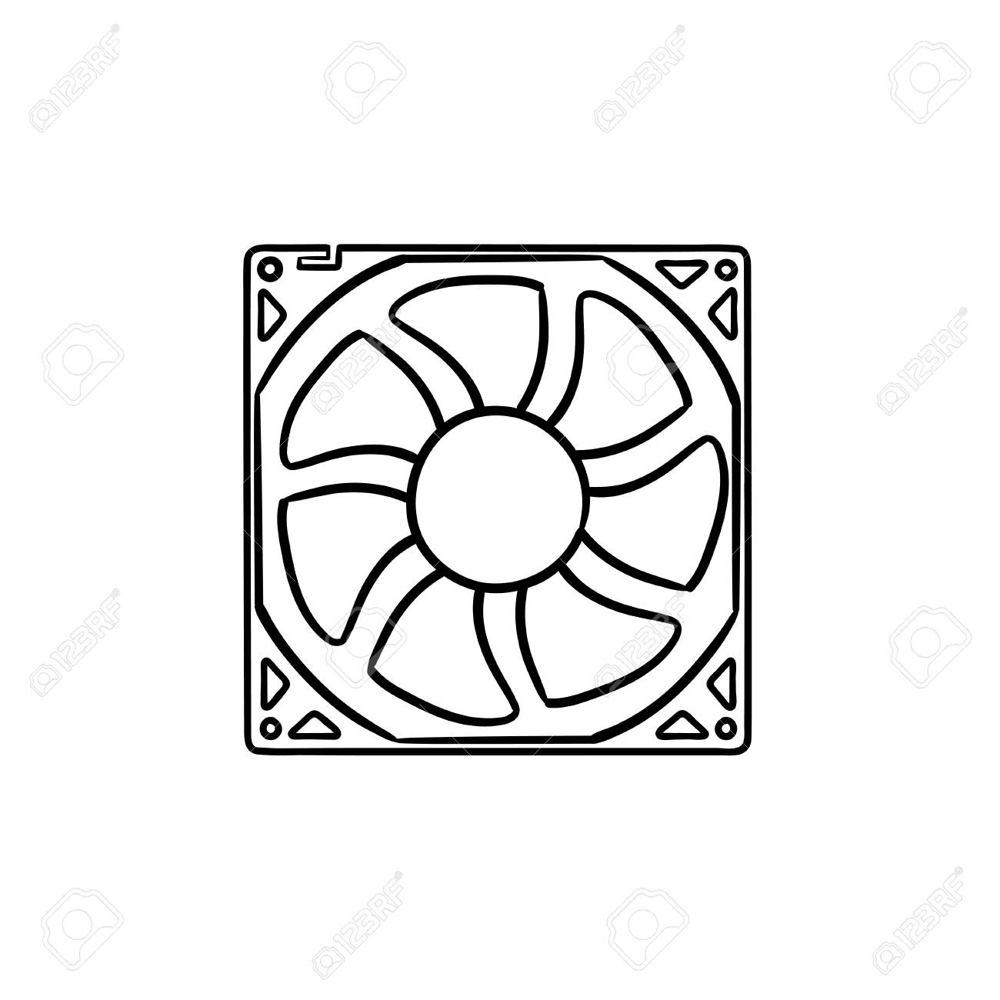

CPU 쿨러
쿨러는 컴퓨터 내부의 부품을 식혀주는 열할을 합니다. 컴퓨터는 전기를 사용하며 열을 발산하게 되는데 이 때문에 온도가 과도하게 올라가게 되면 부품이 제 기능을 하지 못하게 됩니다.
따라서 쿨러는 이러한 일을 방지하는 역할을 하며, 일반적으로 CPU, 그래픽카드, 케이스에 쿨러를 달게 됩니다. 그래픽카드는 외장 그래픽카드 구매 시 기본적으로 제품에 장착되어있으며 CPU또한 기본 쿨러가 동봉되는 경우가 있습니다.
케이스도 마찬가지로 최소 1개 이상의 쿨러가 기본적으로 장착되어있습니다.
우리가 일반적으로 '쿨러' 라고 하여 구매하는 제품은 CPU쿨러를 의미합니다. CPU를 냉각하는 방법은 여러가지가 있지만 일반 사용자들을 위한 쿨러로는 2가지가 있습니다.
공기의 흐름 즉, 바람을 직접적으로 이용하여 냉각하는 방식은 '공냉'방식이라 합니다.
식은 냉각수를 이용하여 냉각하는 방식은 '수냉' 방식이라 합니다.
다음은 각 쿨링의 방식을 설명하기 위한 참고 사진입니다.
출처 : 스마트PC 매거진
공냉쿨러는 사진에 보이는 것처럼 CPU가 열을 발생시키면 CPU에 맞닿아있는 히트파이프로부터 열을 방열판에 전달하여 방열판을 쿨링팬으로 식혀서 CPU의 온도를 낮추는 방식입니다.
 출처 : 스마트PC 매거진
수냉쿨러는 열을 전달하는 용매가 액체 라는 점에서 차이가 존재합니다. CPU에서 열이 발생하면 그 열은 냉각수에 전달됩니다. 뎁혀진 냉각수는 라디에이터에서 식혀지게 되고 식은 액체는 다시 CPU를 식히는 역할을 하게 됩니다.
이 둘의 냉각 능력의 차이는 수냉쿨러가 공냉쿨러보다 더 좋은 성능을 발휘합니다.
이는 공기 보다 액체가 열을 더 잘 전달하는 특성때문에 성능상에서 차이가 발생하게 됩니다.
출처 : 스마트PC 매거진
수냉쿨러는 열을 전달하는 용매가 액체 라는 점에서 차이가 존재합니다. CPU에서 열이 발생하면 그 열은 냉각수에 전달됩니다. 뎁혀진 냉각수는 라디에이터에서 식혀지게 되고 식은 액체는 다시 CPU를 식히는 역할을 하게 됩니다.
이 둘의 냉각 능력의 차이는 수냉쿨러가 공냉쿨러보다 더 좋은 성능을 발휘합니다.
이는 공기 보다 액체가 열을 더 잘 전달하는 특성때문에 성능상에서 차이가 발생하게 됩니다.
출처 : 스마트PC 매거진
수냉쿨러는 열을 전달하는 용매가 액체 라는 점에서 차이가 존재합니다. CPU에서 열이 발생하면 그 열은 냉각수에 전달됩니다. 뎁혀진 냉각수는 라디에이터에서 식혀지게 되고 식은 액체는 다시 CPU를 식히는 역할을 하게 됩니다.
이 둘의 냉각 능력의 차이는 수냉쿨러가 공냉쿨러보다 더 좋은 성능을 발휘합니다.
이는 공기 보다 액체가 열을 더 잘 전달하는 특성때문에 성능상에서 차이가 발생하게 됩니다.
다음은 공냉 쿨러에 대한 설명입니다.
출처 : 다나와 닷컴 잘만 cnps9x 제품 상세설명
냉각 방식 : 공냉 쿨러인지, 수냉 쿨러인지 확인하여야 합니다.
팬 크기 : 팬이 클 수록 더 많은 양의 바람을 발생시킬 수 있습니다. 일반적으로 120mm 나 140mm 를 사용합니다.
최대 소음도, 팬속도, 풍량 : 팬속도가 높으면 높을수록 더 많은 소음을 발생시키지만 더 높은 풍압과 풍량을 발생시킬 수 있습니다. 이는 제품을 몇개로 간추린 상황에서 서로 비교하는데에 참고 할 수 있는 지표입니다.
쿨러 높이 : 쿨러의 높이입니다. 케이스의 CPU높이 제한을 참고하여 구매하면 됩니다.
PWN지원, LED라이트 : PWM은 CPU의 온도에 따라 팬의 RPM이 달라지는 기능입니다. 대부분의 CPU쿨러에는 기본 탑재된 기능입니다. LED라이트는 팬에 LED가 장착되어있는지에 대한 여부입니다. 성능과는 무관합니다.
다음은 수냉 쿨러에 대한 설명입니다.
출처 : 다나와 닷컴 NZXT KRAKEN X73제품 상세설명
냉각 방식 : 공냉 쿨러인지, 수냉 쿨러인지 확인하여야 합니다.
팬 크기 : 라디에이터에 장착되어있는 팬의 크기를 의미합니다. 컴퓨터 케이스 호환 여부를 결정 할 수 있음을 인지하여아 합니다.
최대 소음도, 최대 팬속도, 최대 풍량 : 팬속도가 높으면 높을수록 더 많은 소음을 발생시키지만 더 높은 풍압과 풍량을 발생시킬 수 있습니다. 이는 제품을 몇개로 간추린 상황에서 서로 비교하는데에 참고 할 수 있는 지표입니다.
라디에이터 : 간단히 말해서 팬이 라디에이터에 몇개가 달리는지를 알 수 있는 지표입니다. 1열은 1개의 팬, 2열은 2개, 3열은 3개의 팬을 라디에이터에 장착 할 수 있습니다.
A/S기간 : 수냉쿨러에 있어서 A/S기간은 매우 중요한 스펙중 하나입니다. 수냉쿨러는 고장 시 누수로 인하여 다른 부품들에도 매우 큰 악영향을 미칠 수 있습니다. 따라서 수냉쿨러의 A/S는 누수로 인하여 다른 부품도 고장 날 시 함께 A/S처리를 해주는 정책을 사용하고있습니다.
따라서 A/S기간이 끝나면 다른 쿨러로 바꾸는 것이 좋습니다. 그렇기에 A/S기간은 매우 중요한 사항입니다.